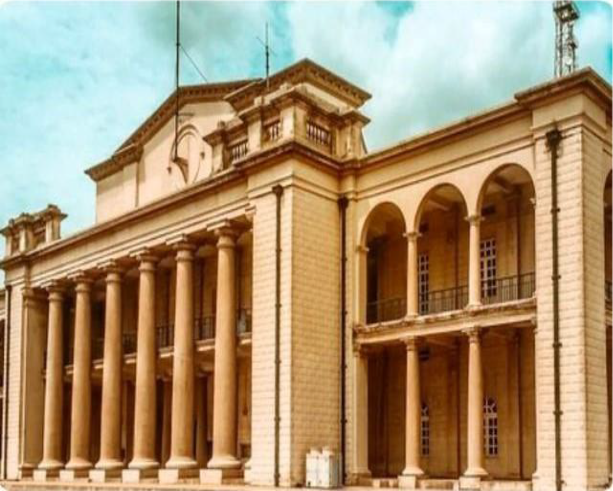
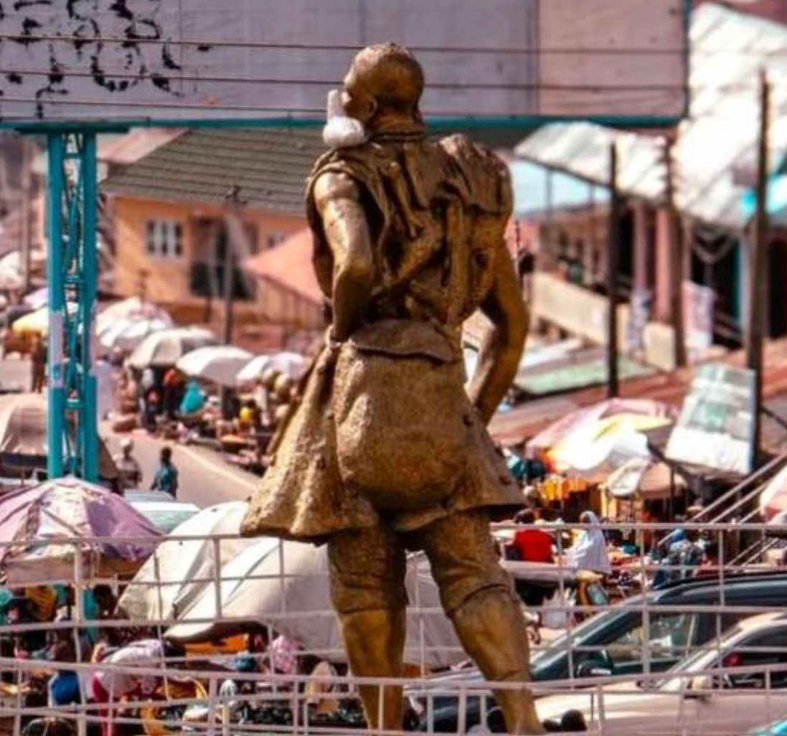

Mapo Hallibadan City Hall
Mapo Hall, located in Ibadan, Oyo State, Nigeria, is one of the city's most iconic landmarks, rich in historical and cultural significance as the name "MAPO" was derived from the Yoruba word which signifies ' "'top of the h i l l" reflecting its strategic location atop a hill in the heart of Ibadan. The building sits in the midst of two major markets namely Oja Oba and Beere in Ibadan right within a flurry of activities and the brimming population of the area with its statue of an ancient Ibadan warrior ""The BALOCUN Oderinlo" situated at the roundabout The hall, which serves as both a civic center and a symbol of Ibadan's heritage, was built during the British colonial era, conceived by a British architect; W. F. H. Chubb, who infused elements of traditional African aesthetics with modern as well as European architectural practices as the architectural design of Mapo Hall is a blend of indigenous Yoruba styles and colonial influences.its construction however was completed in 1961 with its foundation stone laid by the then resident of Oyo province , Captain Ross costing about €24,000 ; equivalent to a whopping El.9 million in today's value The unique architectural combination gives Mapo Hall its distinct look, which has made it an enduring symbol of the city as it has over the years played a central role in the civic and political life of Ibadan.

Although Mapo hall was Initially meant to house the local government offices, providing a base for the administration of the region, It was also the venue for major political and social gatherings during the colonial and post-colonial periods with which it has hosted various events, including cultural festivals, public speeches, and important ceremonies over the years. The hall's role is act as a focal point for governance continued even after Nigeria's independence in 1960, particularly as Ibadan grew in prominence within the Western Region which throughout the years has witnessed key political events and speeches, many of which have shaped the trajectory of local governance in the region.

Beyond its political significance, Mapo Hall is a center for the preservation of Ibadan's cultural heritage as the building is closely associated with the rich traditions of the Yoruba people while also serving as a reminder of the city's historical importance for being one of the largest and most influential urban centers in Nigeria before and after colonial rule. Mapo halll is a popular tourist destination, attracting visitors who come to admire its architectural beauty and to learn about the history of Ibadan. It also continues to serve as a hub for local government activities and events. However, In 2011; the building underwent extensive renovations to preserve its structure and improve its facilities with ensuring that the hall retained its historical essence while accommodating the demands of modern usage. Mapo Hall remains not only an architectural marvel but also a cultural and political emblem of Ibadan, embodying the city's legacy and its continued evolution as a significant part of Nigeria's history.